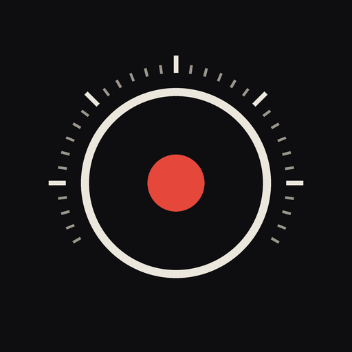

Gizlilik Politikası · Son güncelleme: 27 Eylül 2026
Kamera, bir Android uygulamasıdır. Geliştirici: Ali Saraç. Paket adı: com.alisrc.kamera.
Kamera sizden hiçbir kişisel bilgi istemez — hesap yok, giriş yok; isim, e-posta, telefon veya konum sorulmaz. Verileriniz yalnızca telefonunuzda durur.
Toplanan veri: yok. Kamera hiçbir veriyi cihazınızın dışına göndermez. Sunucusu, kullanıcı hesabı, analitik, çökme raporlama ya da reklam bileşeni yoktur.
Uygulama, işlevini yerine getirmek için aşağıdaki verileri yalnızca cihazınızda işler ve cihazınızda saklar:
Fotoğraflar dışındaki bu veriler uygulamanın özel depolama alanında tutulur; Android'in uygulama yedeklemesi açıksa Google hesabınızın yedeğine, diğer uygulama verileri gibi dahil olabilir. Uygulamayı kaldırmak bunları siler; fotoğraflarınız DCIM/Kamera'da kalır. Tarifler uygulama içinden (Tarifler → basılı tut → Sil) silinebilir.
Kamera: fotoğraf çekmek ve önizlemeyi göstermek için; görüntüler yalnızca cihazda işlenir. Bu izin verilmezse uygulama çekim yapamaz. Uygulamanın internet izni yoktur; hiçbir veri cihazdan çıkamaz.
Analitik yok, çökme bildirimi yok, hesap yok, giriş yok, sosyal bağlantı yok. Rehberinize, galerinizdeki diğer fotoğraflara, dosyalarınıza, mikrofonunuza ya da GPS konumunuza erişilmez; kamera yalnızca siz uygulamayı kullanırken çekim için açılır. Veri toplayan ya da gönderen üçüncü taraf SDK yoktur (yalnızca Google'ın AndroidX/CameraX kütüphaneleri, cihaz içinde); veri hiçbir üçüncü tarafla paylaşılmaz.
Uygulama 18 yaş üstü kullanıcılar için tasarlanmıştır; çocuklara yönelik değildir ve 13 yaşın altındaki kullanıcılardan bilerek veri toplanmaz.
Privacy Policy · Last updated: 27 September 2026
Kamera is an Android app. Developer: Ali Saraç. Package name: com.alisrc.kamera.
Kamera asks you for nothing personal — no account, no sign-in; no name, email, phone number or location. Your data stays on your phone.
Data collected: none. Kamera sends no data off your device. It has no server, no user accounts, no analytics, no crash reporting and no advertising components.
To do its job, the app processes and stores the following only on your device:
Apart from the photos, this data lives in the app's private storage; if Android app backup is enabled, it may be included in your Google account backup like other app data. Uninstalling the app deletes it; your photos stay in DCIM/Kamera. Recipes can be deleted in the app (Recipes → long-press → Delete).
Camera: to take photos and show the preview; images are processed only on the device. Without it the app cannot take pictures. The app has no internet permission; no data can leave the device.
No analytics, no crash reporting, no account, no sign-in, no social connection. No access to your contacts, the other photos in your gallery, your files, microphone or GPS location; the camera is only opened for shooting while you use the app. No third-party SDK that collects or sends data (only Google's AndroidX/CameraX libraries, on the device); no data is shared with any third party.
The app is intended for users aged 18 and over. It is not directed at children and we do not knowingly collect data from anyone under 13.